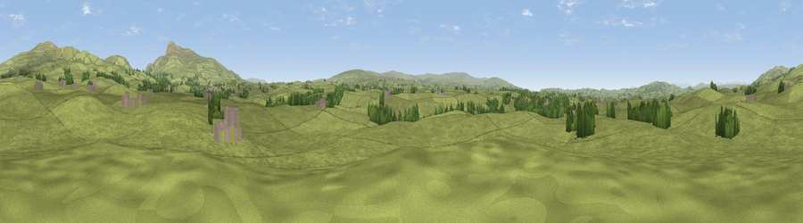

Viewpoint near Burton in Lonsdale
#23319 in England · top 64% of its area beats it · near Burton in LonsdaleThe view, rendered

A 360° render of this exact spot computed from the terrain model, tree cover and land cover — summer colours, afternoon light, calibrated against photographs of famous viewpoints. Real trees, hedges and buildings will differ in detail.
The panorama
Grey silhouette: terrain skyline in each direction (720 bearings, Earth curvature and refraction included). Dashed green: skyline with trees (+15 m) and buildings (+8 m) as obstacles. Blue strip: how far the ground is visible on each bearing.
Where the view opens
Wedge length = distance to the farthest visible ground on that bearing (vegetation-aware). Rings at 10, 25 and 50 km.
What fills the view
95% grassland · 4% woodland · 1% built-up
Angular shares of the visible panorama (visual magnitude), not map area. Landscape diversity 0.10 (0–1 Shannon).
Key numbers
More beautiful places nearby
The staircase of upgrades: each row has a higher view potential than everything closer. Driving times are estimates from straight-line distance, calibrated against real road routing — check an actual route before setting out.
| Place | Direction | Drive | Score |
|---|---|---|---|
| Viewpoint near Burton in Lonsdale | NW · 1 km | ~3 min | 53.4 |
| Viewpoint near Ireby | NW · 3 km | ~7 min | 57.4 |
| Tow Scar | NNE · 4 km | ~9 min | 73.1 |
| Dodson's Hill | NNE · 6 km | ~12 min | 74.9 |
| Viewpoint near Ingleton | ENE · 8 km | ~16 min | 79.5 |
| Crag Hill | NNE · 11 km | ~21 min | 80.0 |
| Warton Crag | W · 17 km | ~30 min | 83.2 |
| Viewpoint near Grange-over-Sands | W · 27 km | ~44 min | 83.4 |
54.14969, -2.51554 · source: screening · position refined by local search. Computed location — check access rights before visiting.